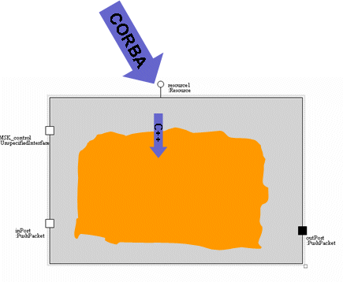
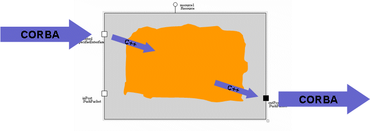

The Main function is used to start a component or device. It parses and manages executable parameters. It creates a CORBA object for the component or device and registers the element with the CORBA namingservice. It also starts the ORB, if required.
The main CORBA class (zceMyComponentServant) for a component implements CF::Resource,
contains ports, properties, and interfaces. It also contains the code to manage them,
including getPort, configure, and query.
The main CORBA class (zceMyDeviceServant) for a device implements CF::Device, CF::LoadableDevice, CF::ExecutableDevice,
and CF::AggregateDevice,
contains ports, properties, and interfaces. It also contains the code to manage them,
including getPort, configure, and query.
All the information required to generate the code to implement this functionality is contained in the visual model.
The CF::Resource defines the external behaviour of an SCA component. For devices, there are four CF interfaces that define the external
behaviour: CF::Device, CF::LoadableDevice, CF::ExecutableDevice, and CF::AggregateDevice.
CF::Resource standardizes how a component has to behave, including
CF::Resource states nothing about functional code, rather it triggers the functional code. The servant receives CORBA class for
the CF::Resource interface and it triggers the functional code through standard C++ function calls.
These interfaces standardize how a device behaves, including:
The device interface states nothing about functional code, rather it triggers the functional code. The servant receives CORBA class for the interface and it triggers the functional code through standard C++ function calls.
CF::Resource::start is responsible for starting the processing. The component code manages the start. The component code
then informs the functional code.

Ports define how the component or device interacts with the environment and thus how the functional code communicates. Ports have specified interfaces: Provides ports define incoming operations and Uses ports define outgoing operations.
The generated code manages the CORBA aspects of both provides and uses ports. Any incoming data from a CORBA call on a provides port is passed through C++ calls to the functional code. Any outgoing data is sent through a C++ call to the uses port object and the latter forwards to the receiver.

A component or device can have three types of properties:
CF::PropertySet::configure (in Properties configProperties) is responsible for writing values to properties. It passes a sequence
of id (string) and value (any). The component or device code manages the configure, which includes verifying the id and any. It then forwards
this data to the functional code through a C++ call to the function config_<propertyname>. The element code has already
cast the data in the any field to the proper type and this is an input parameter to the config_<propertyname> function on the
functional code.
Interfaces are used on ports and supports interfaces. The IDL needs to be compiled into C++ through the IDL2CPP provided with the ORB. The C++ needs to be compiled through the C++ compiler. This is all accomplished through the IDL_to_CPP > GenerateCPP and IDL_to_CPP > Compile_IDLCPP steps highlighted earlier.